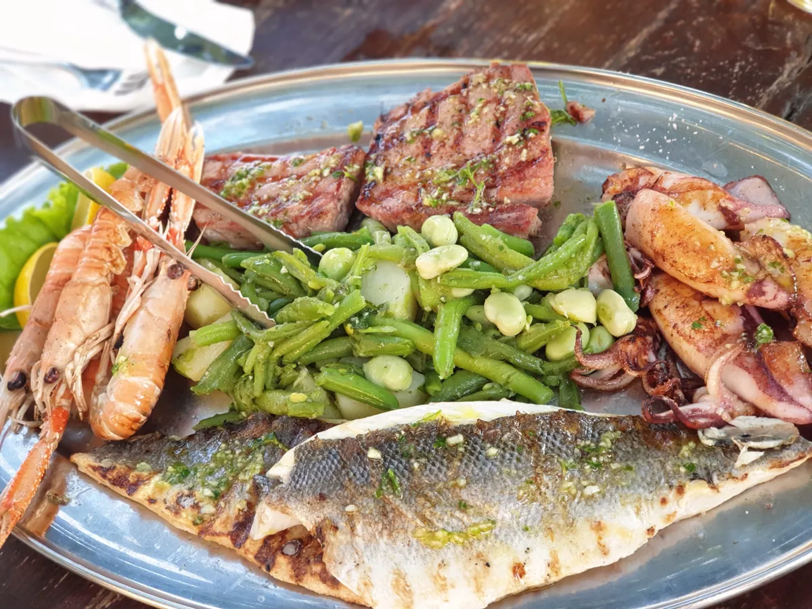
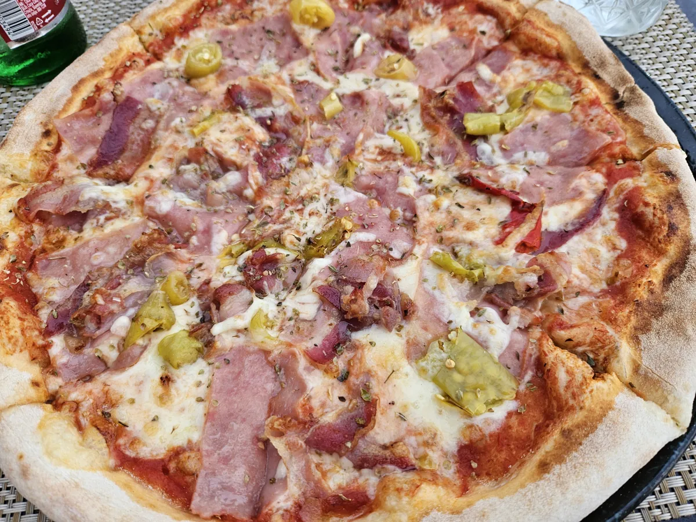
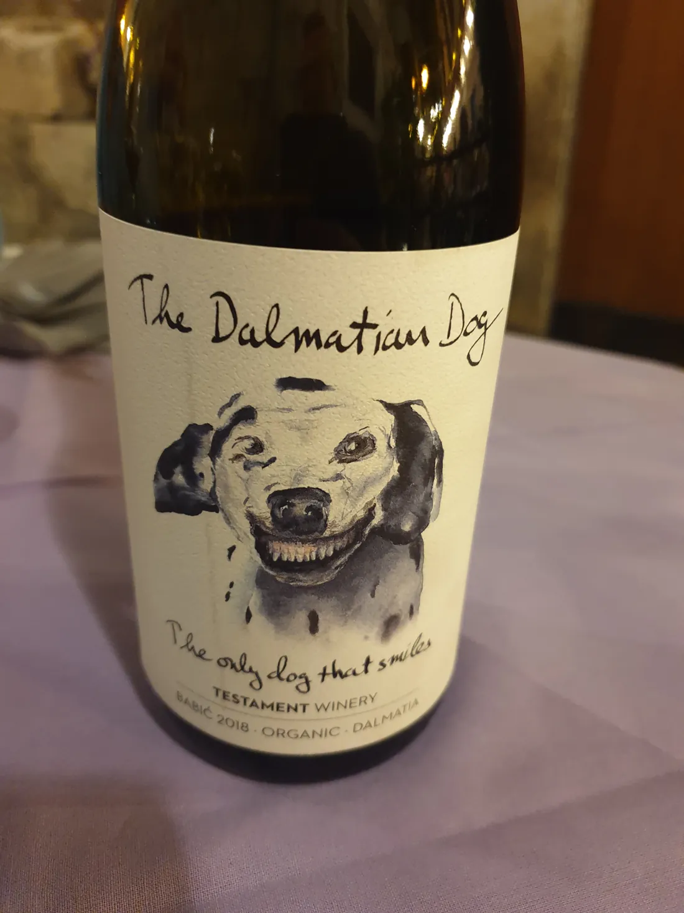

Not a ranked "best of" scraped from review sites — the short list of places we actually eat at in and around Trogir, with the honest reasons we go back, what to order, and what we'd quietly skip.
A couple are in the old town, a few are worth a short drive or the walk over to Okrug and Seget. Where the riva gets touristy we'll say so; where a quiet konoba does it better, we'll point you there. For the bigger picture — what Dalmatian food is and what to order — see our wider Trogir restaurants guide.

📷 Our photo
This is the Dalmatian default. A whole fish, grilled simply, with seasonal veg — order it where the fish is fresh and priced by the kilo, and you can't go far wrong. · Trogir
At a glance
The seven, side by side
Where each one is, what it's good for, and what we'd order. The detail — and the honest caveats — are in the write-ups below.
Place
Where
Good for
What we order
Mirkec
Old town · on the riva
A harbour view, easy menu
Pizza, pasta
Kristian
Old town
Proper stone-oven pizza
Pizza
Mali Raj
Okrug Gornji, Čiovo
Traditional & quieter
Dalmatian classics
Rico
Seget Donji
Seafood, family-run
Fresh fish & seafood
Mlinice Pantan
Pantan, outside town
The setting, a long dinner
Traditional konoba dishes
Leonardo
Trogir
Fish & seafood
Fish, seafood
Barba
Trogir
Simple, rustic Croatian
Grilled meat & fish
Our picks
The seven, one by one
Honest takes — what we order, who each one suits, and the odd caveat.
Mirkec
Old town · on the riva

📷 Our photo · Mirkec
Pizza at Mirkec. The pizza photos on this page are ours, shot here — thin, properly fired, generous with the toppings. · Trogir riva
The one waterfront spot we'd happily send you to. You eat with the harbour right in front of you, and while the menu is broad Croatian, it's the wood-fired pizza and the pasta we actually order. A view usually costs you on the riva — here it's still worth it.
Order: a wood-fired pizza, or the pasta.
Kristian
Old town · pizzeria
A dedicated pizzeria in the old town, and a good one — crisp, properly fired stone-oven pizza with no fuss. If pizza's the plan and you want it done right rather than dressed up, this is where we'd point you. Between this and Mirkec you've got the town's pizza covered: Kristian for the pizzeria, Mirkec for the harbour view.
Order: a classic stone-oven pizza.
Konoba Mali Raj
Okrug Gornji, Čiovo
Over on Okrug Gornji, across the bridge on Čiovo and away from the old-town crowds. The name means "little paradise"; in practice it's a small, traditional konoba cooking Dalmatian dishes with local ingredients. Worth the short hop for a quieter, more local dinner than you'll get on the riva.
Order: whatever's the day's grill or catch.
Konoba Rico
Seget Donji
A family-run konoba out in Seget Donji, the village just west of Trogir. Fresh seafood and home-style Croatian cooking, and the warm, family service is half the reason to go. Especially handy if you're staying out that way rather than in the centre.
Order: the fresh fish and seafood.
Konoba Mlinice Pantan
Pantan · just outside town
The setting is the whole point here: an old water mill on the Pantan river just outside Trogir, beside the little nature reserve. Rustic indoors, idyllic out by the water — this is one for a long, unhurried evening rather than a quick bite. A short drive out, and worth it for the atmosphere alone. Pair it with a walk in the Pantan reserve beforehand.
Order: traditional konoba dishes — and take your time.
Leonardo
Trogir
An easygoing place for Mediterranean and Croatian cooking, where the fish and seafood are the strong suit. Nothing showy — just a reliable, relaxed sit-down dinner when you want fish done properly.
Order: the fish or a seafood dish.
Barba
Trogir
Rustic and unpretentious, and good at exactly that — honest Croatian plates with the grilled meats and the fresh fish the things to get. No frills, no fuss, no photo menu.
Order: grilled meat, or the fresh fish.
Good to know
Before you eat out in Trogir
01
Fish is sold by the kilo
Fresh fish and seafood are usually priced per kilogram, not per plate. Ask the price per kilo and roughly what your fish weighs before you nod yes — that's how the bill stays a pleasant one.
02
One street back beats the riva
The waterfront is the priciest, most touristy strip. Walk a lane or two back, or out to Okrug and Seget, and you'll usually eat better for less.
03
A konoba is the home cooking
A konoba is a traditional family tavern — that's where the slow-cooked local dishes are. Mali Raj, Rico and Mlinice are konobas for a reason.
04
Dinner is late, and unhurried
People eat late here and linger. Don't expect to be rushed, and don't turn up at six expecting atmosphere. A bread or cover charge is normal, too.

📷 Our photo
Drink local. The house wine is usually a regional Plavac or a crisp white, poured by the carafe for not much — better value, and more in keeping, than an imported bottle. · near Trogir
Honest warning
What we'd skip
No place named — just the patterns that usually mean tourist-trap rather than good dinner.
Riva-front spots with laminated photo menus and a host waving you in. You're usually paying for the position, not the cooking.
"Fresh fish" with no price on the menu. If they won't tell you the per-kilo rate up front, walk on — that's the bill that surprises people.
Giant do-everything menus — pizza, sushi, steak and paella under one roof. Pick places that do one cuisine well instead.
FAQ
Eating out in Trogir — common questions
Do you need to book a table?
In July and August, yes — book ahead for a waterfront table at sunset and for the popular konobas at weekends. Outside peak season you can usually just turn up.
Where do locals actually eat?
A lane or two back from the riva, and out of the old town — Okrug Gornji on Čiovo and Seget Donji to the west, where small family konobas like Mali Raj and Rico do it better for less.
Cash or card?
Most places take cards now, but carry some euros in cash for the smaller family konobas and for splitting bills.
Best for families?
The konobas with room to breathe — Mali Raj and Rico — and Mirkec's easy menu right by the harbour. See our Trogir with kids guide for more.
Hi, I'm Ante. My family has been connected to Trogir for many years and we've spent countless summers here. This guide shares the places we genuinely recommend, along with honest advice on what is—and isn't—worth your time.